园区语音导览
选择点位，收听温和清晰的 AI 语音讲解。
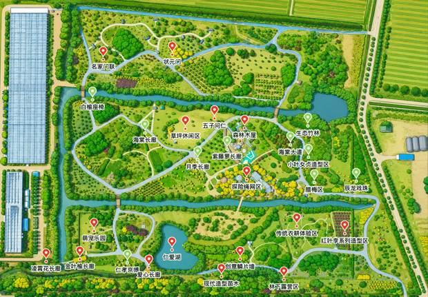
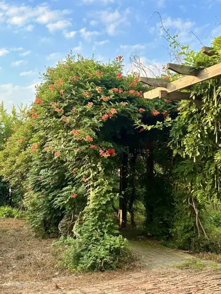
凌霄花长廊
“满目落红凌霄花，百步长廊景如画” 凌霄花长廊欢迎大家。凌霄花为紫葳科凌霄属落叶攀援藤本，原产于中国中部及东……
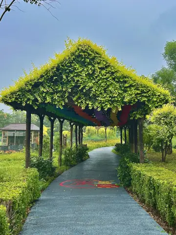
金叶榆长廊
"金廊叠叶藏余庆，玉树笼光满径春"，欢迎步入金叶榆长廊。金叶榆为榆科榆属落叶乔木，是以北方乡土树种白榆为砧木……
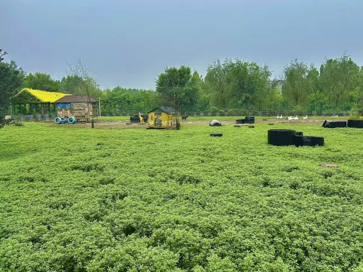
萌宠乐园
欢迎来到萌宠乐园。园区内饲养了多种性情温顺的萌宠，在工作人员的引导下，您可以观察动物习性、在专属区域投喂饲料……
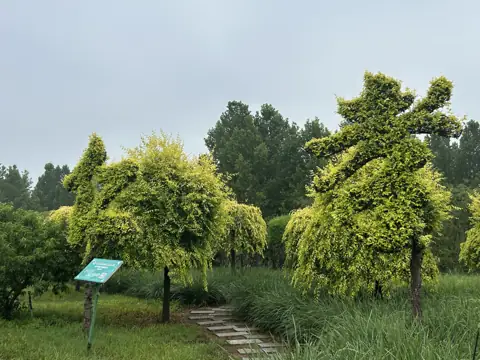
金叶榆造型区 · 仁孝京博
“谁把金辉书仁孝，裁成枝叶作墨痕”。您现在驻足观赏的这组金黄字体造型，就是园区标志性的活体植物造景 ——“仁……
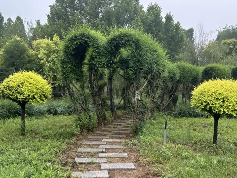
爱心长廊
榆枝绾就同心拱，一径清荫藏仁心。您现在来到的，是园区内极具浪漫气息的特色景观——爱心长廊。长廊以北方乡土树种……
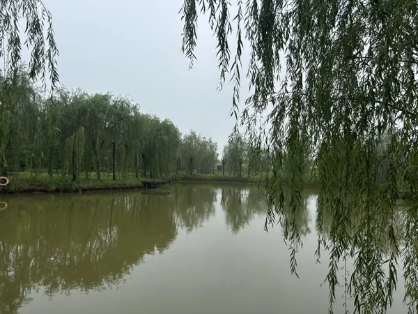
仁爱湖
碧水裁成心字影，清湖涵得仁风来。您眼前这片开阔的水面，就是园区的核心水系景观 —— 仁爱湖。仁爱湖因湖面天然……
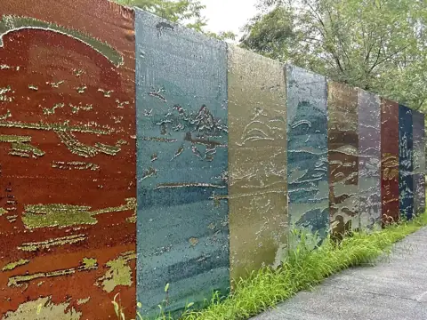
创艺DIY鳞片墙
您眼前这面闪闪发光的互动墙，就是园区的特色趣味打卡点 —— 创意鳞片墙。整面墙以传统龙鳞为设计灵感，由数万片……
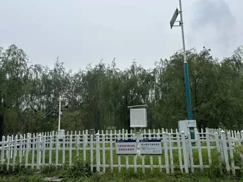
气象站
您现在看到的，是由滨州市布设的气象监测站。站内配有空气温湿度、光照、风速风向、雨量等监测设备，可全天候自动采……
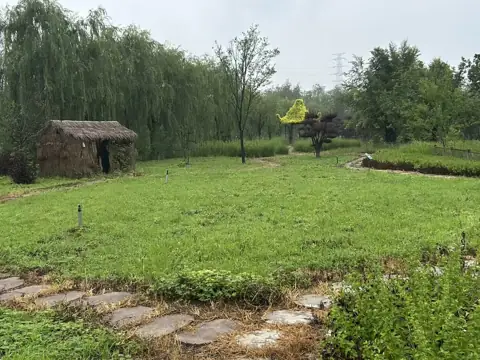
农耕区
您现在来到的，是园区的传统农耕体验区。这里集中呈现了鲁北地区的传统菜园风貌，也承载着一代代人的乡村生活记忆。……
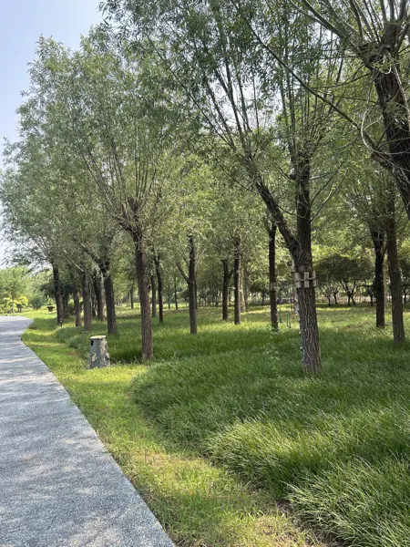
林下露营区
您现在来到的，是园区的林下露营区。大家可以看到，这里利用林木之间自然形成的开敞空间布置，地面较为平整，四周绿……
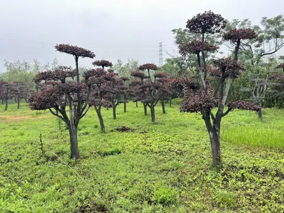
红叶李系列造型区
紫云落树成佳景，红叶衔春满庭芳。您眼前这片叶色浓艳、造型别致的苗木，就是红叶李，又名紫叶李，是蔷薇科李属落叶……
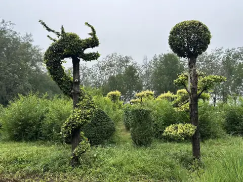
辰龙戏珠造型苗木
金叶蟠成龙跃态，灵珠衔得瑞光来。您眼前这组灵动别致的造型苗木，就是园区颇具匠心的特色植物景观——辰龙戏珠。整……
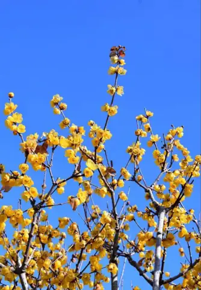
腊梅区
“宝剑锋从磨砺出，梅花香自苦寒来。”这句耳熟能详的诗句，让人联想到的，正是眼前这片凌寒绽放的花木——蜡梅。蜡……
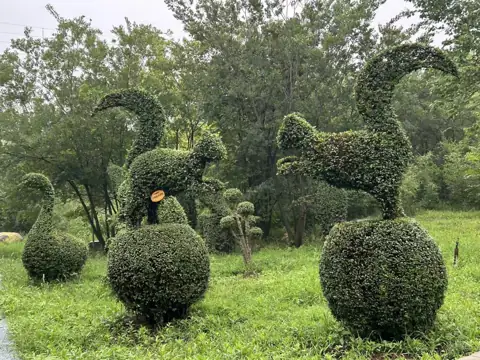
小叶女贞造型区
细叶裁出尘世景，青枝织就古今缘。您眼前这片充满故事感的植物造型区，是以小叶女贞为核心材料打造的主题造景。小叶……
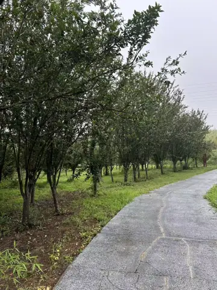
海棠大道
您现在来到的，是园区春季最具代表性的花木景观——海棠大道。说到海棠，很多人以为它只是一种花，其实海棠是一个品……
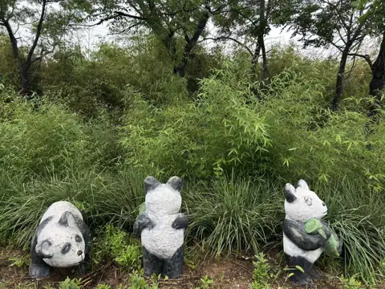
生态竹林
您现在来到的，是园区清幽雅致的生态竹林。竹子属于禾本科竹亚科植物，常见园林竹种大多四季常青。它的竹秆挺拔、中……
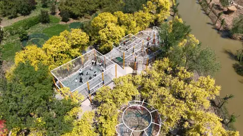
探险绳网区
绳网铺成探险路，林荫护得稚童欢。您眼前这片藏在浓荫中的户外游乐场，就是由乐安慈善基金投资建设的儿童绳网区。这……
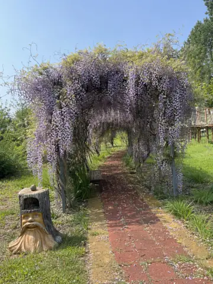
紫藤萝长廊
“紫藤挂云木，花蔓宜阳春。密叶隐歌鸟，香风留美人。”这是唐代诗人李白《紫藤树》中的诗句。紫藤攀木而生，花蔓迎……
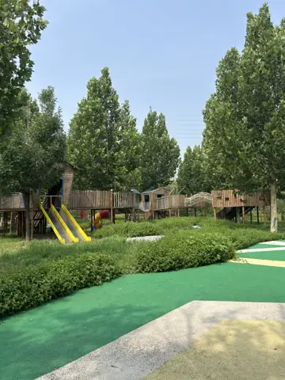
森林木屋区
您眼前这片掩映在绿树之间的游乐空间，就是专为孩子打造的林间木屋游乐区。几座原木小屋顺应林间地势架空而建，通过……
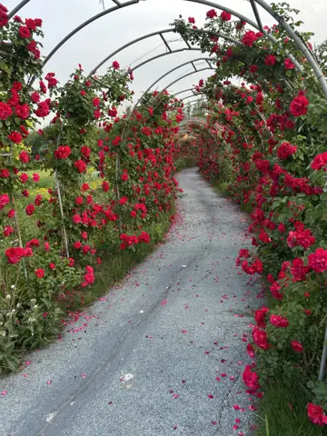
月季长廊
“只道花无十日红，此花无日不春风。”这是南宋诗人杨万里《腊前月季》中的名句。诗句并不是说一朵月季永不凋谢，而……
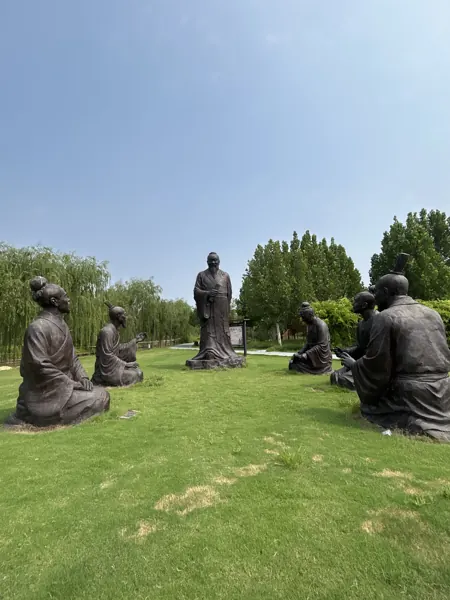
五子问仁
您现在驻足观赏的，是园区儒家文化主线的重要景观——五子问仁雕塑群。大家可以仔细观察这组群像：正中是身形端直、……
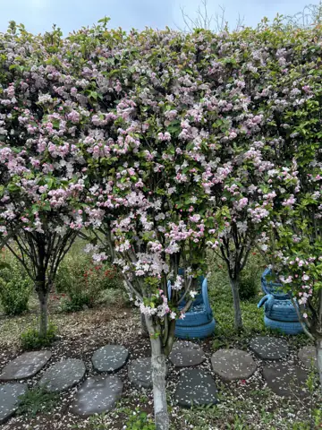
海棠长廊
“只恐夜深花睡去，故烧高烛照红妆。”这是北宋文学家苏轼《海棠》中的名句。诗人唯恐夜深之后海棠倦极而眠，特意燃……
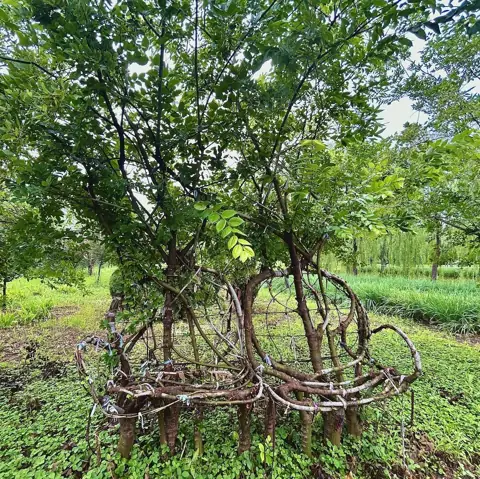
白榆座椅造型
走累了，不妨在这里稍作休息。您眼前这把可以坐、可以靠的椅子，是由3-5株白榆经过多年培育，慢慢“生长”出来的……
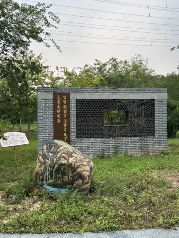
名家门联
门庭有联藏雅韵，框中见景浸书香。您此刻步入的名家门联区，是园区里一处融传统楹联文化、书法艺术与中式园林造景于……
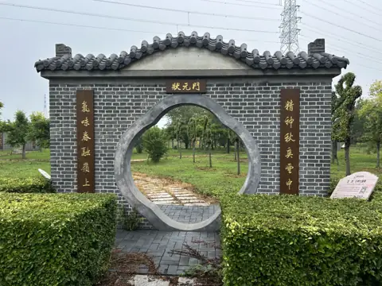
状元门
您眼前这座青灰砖墙、小青瓦覆檐的海棠形门庭，是园区的“状元门”。门楣正中题有“状元门”三字，古朴端庄，书香意……